판매 후 고객 문의를 티켓으로 받아 팀에 배정하고, SLA 정책으로 첫 응답과 해결 기한을 정합니다. 기한을 넘기면 위반이 원장에 한 번 남고, 준수율과 처리 흐름도 원장에서 봅니다.
무엇을 · 왜#
| 무엇 | 어떻게 |
|---|---|
| 배정 | 팀별로 직접 배정하거나, 돌아가며 또는 열린 티켓이 적은 사람에게 배정합니다 |
| SLA 정책 | 최소 우선순위·유형별 첫 응답·해결 시간을 정합니다. 달력 시간이나 회사 달력의 근무 시간으로 셉니다 |
| 고객 대기 | 해결 시계만 멈춥니다. 고객이 답하면 남은 시간을 다시 셉니다 |
| 위반 | 기한이 지나면 SLA 위반이 기한 시각으로 한 번 남습니다. 매분 실행하는 작업, 앱, 기한 지금 확인 단추 중 먼저 확인한 쪽이 기록합니다 |
| 고객 링크 | 고객은 링크로 로그인 없이 진행을 보고 답합니다. 내부 메모는 보이지 않습니다 |
| 분석 | SLA 준수율(판단한 티켓 20건 전에는 근거 부족), 첫 응답·해결 시간, 단계·우선순위·유형별 수를 봅니다 |
헬프데스크는 다른 모듈 없이도 사용합니다. 판매나 청구가 켜져 있으면 티켓에 주문과 청구서를 연결할 수 있습니다. 고객 담당자 연락처는 원장 밖에 있어 지울 수 있습니다.
먼저 알아 둘 것
- 가온가전은 가상 회사이고, 사람·고객·문의는 모두 가상입니다. 화면은 로컬 Supabase에서 찍었습니다.
- 녹화 전에 구성원 상담하나, 상담둘, 에이전트 계정 지원봇(모두 헬프데스크 역할)과 고객 가온마트를 명령으로 넣었습니다.
- 둘째 문의는 지원봇이 MCP로 열었고, 셋째 문의는 다섯 시간 전 시각으로 넣었습니다(로컬 시험 환경에서만 가능합니다).
따라 하기#
- 헬프데스크 켜기. 관리자로 설정 → 모듈에서 헬프데스크를 켭니다. 켜기 전 고객 문의는 원장에 없고, SLA는 켠 뒤 접수한 티켓부터 적용된다고 안내합니다.
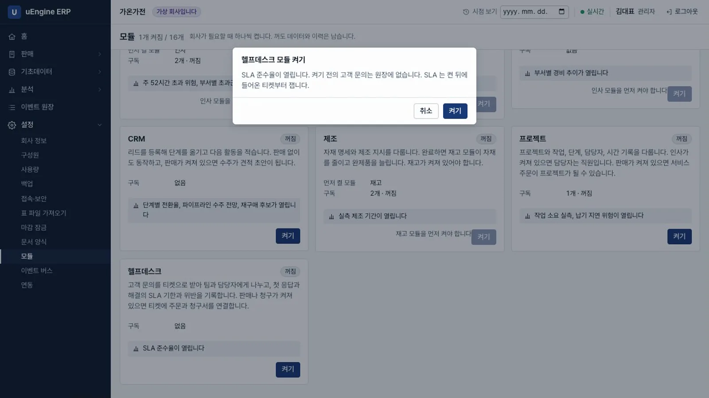
헬프데스크 켜기 - 팀. 헬프데스크 → 헬프데스크 팀에서
고객지원팀을 만들고 구성원은 상담하나·상담둘, 배정 방식은돌아가며로 저장합니다.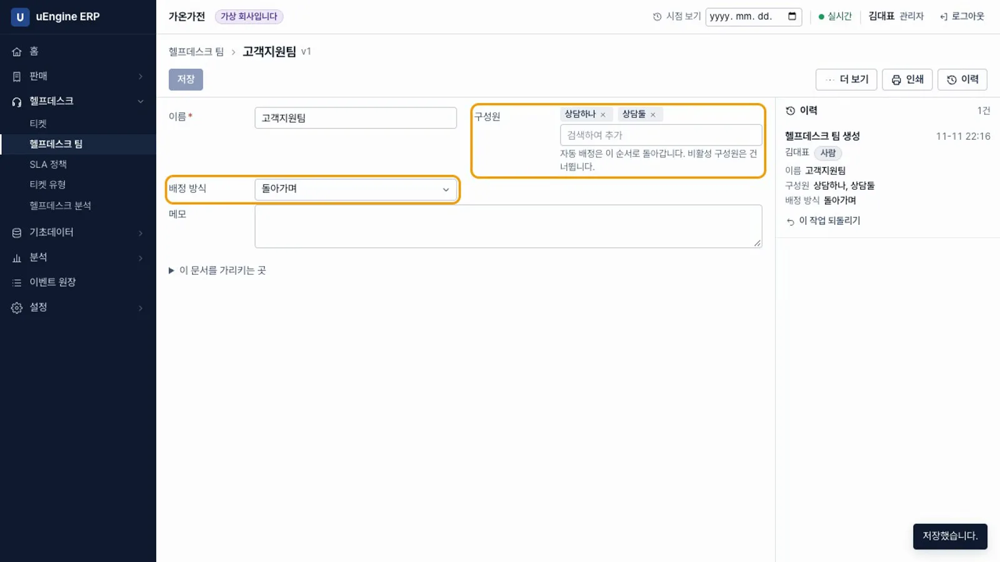
팀 - SLA 정책. 헬프데스크 → SLA 정책에서
높음 이상을 만듭니다. 팀은고객지원팀, 최소 우선순위는높음, 첫 응답은4시간, 해결은24시간, 세는 방식은달력 시간으로 정합니다. 첫 응답 시간이 해결 시간보다 길면 저장할 수 없습니다.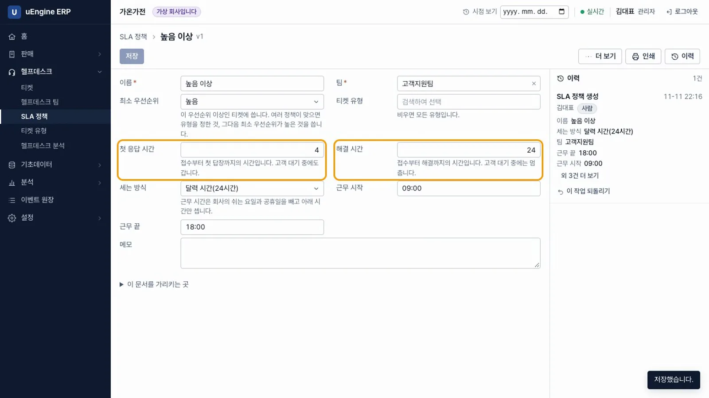
SLA 정책 - 티켓 접수. 상담하나로 헬프데스크 → 티켓 → 새로 만들기에서 고객
가온마트, 제목제습기 전원이 켜지지 않습니다, 우선순위높음으로 저장합니다.HD00001이 차례로 상담하나에게 배정되고, SLA에첫 응답 4시간 안에,해결 24시간 안에가 붙습니다.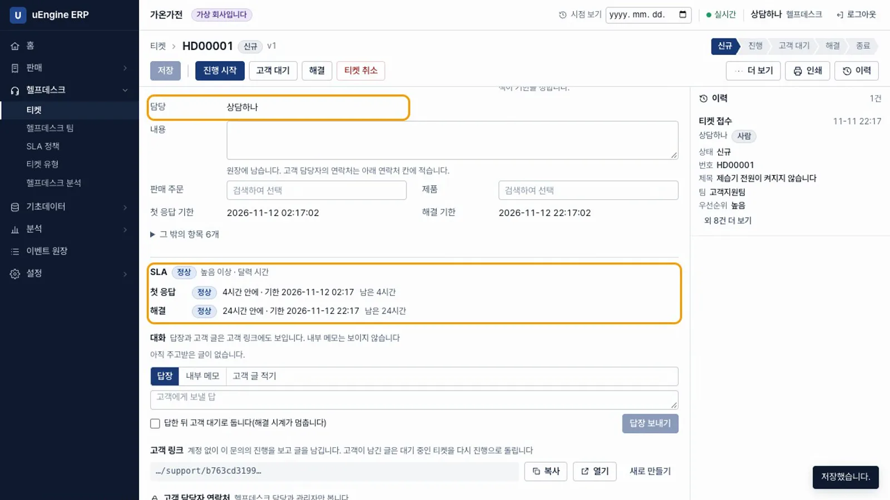
티켓 - 에이전트가 연 티켓. 둘째 문의
HD00002 설치 기사 방문 일정은 지원봇이 MCP로 열었습니다. 다음 상담둘에게 배정되고, 이력에티켓 접수 · 지원봇 · 에이전트가 남습니다. 에이전트는erp_read로 SLA 상태(정상 · 첫 응답 4시간 안)를 읽었습니다.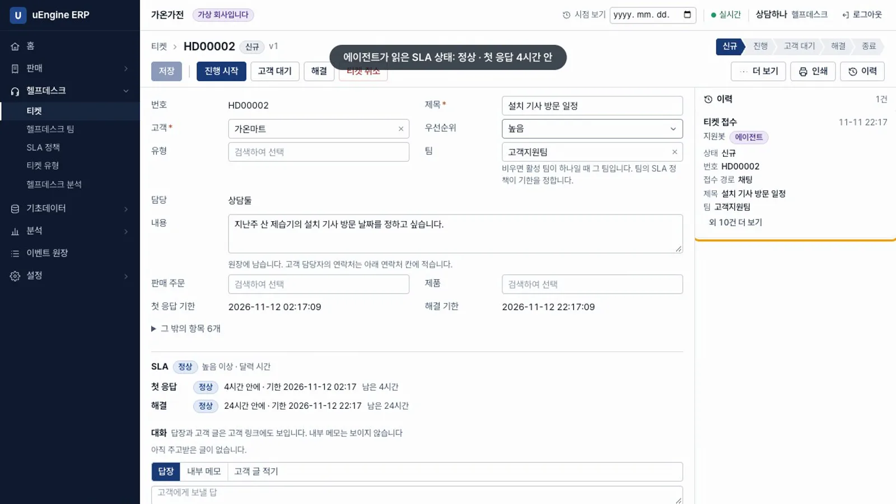
에이전트 - 답하고 해결. 상담하나가
HD00001에 답장을 보내고 해결을 누릅니다. 첫 응답과 해결 모두 「지킴」입니다.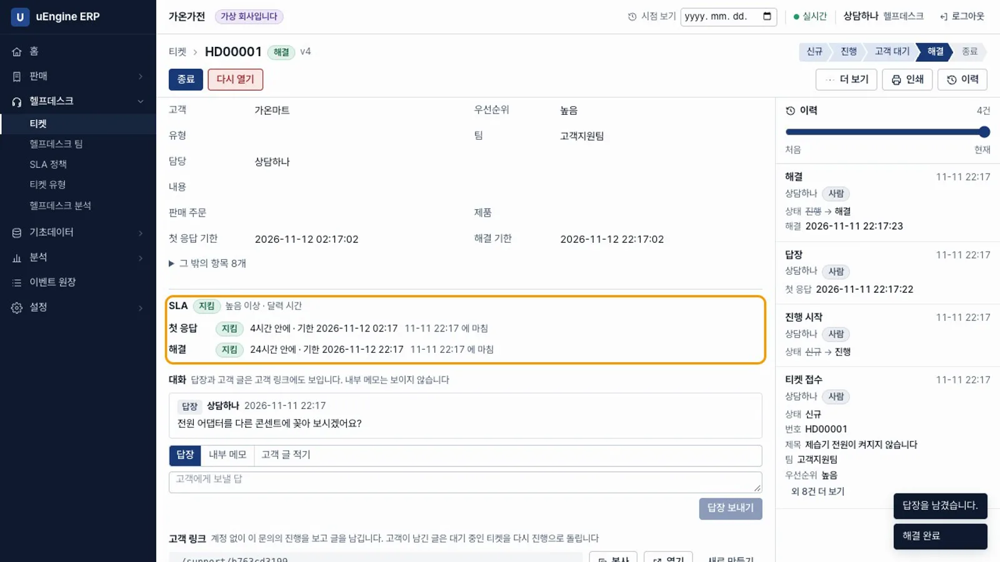
지킴 - 고객 대기. 상담둘이
HD00002에 내부 메모기사 일정표 확인 필요를 남기고, 답한 뒤 고객 대기로 둡니다를 선택해 방문 가능한 날짜를 묻는 답장을 보냅니다. 티켓은 「고객 대기」가 되고 해결 시계가 멈춥니다.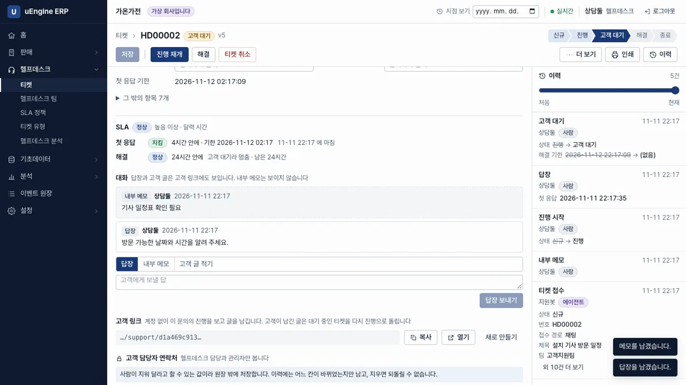
고객 대기 - 고객 링크. 고객은 링크로 로그인 없이 문의를 봅니다. 담당자의 답장만 보이고 내부 메모는 보이지 않습니다. 고객이
다음 주 화요일 오전 10시가 좋습니다라고 답하면 「처리 중」이 됩니다.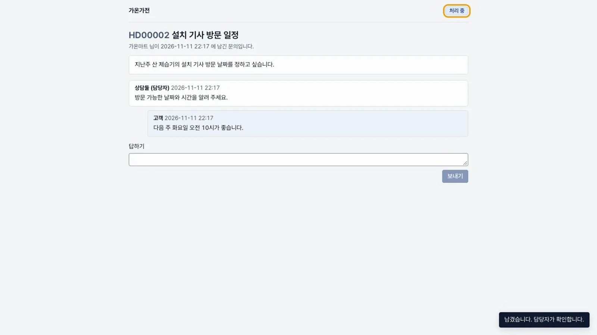
고객 링크 - 진행으로 돌아옴. 직원 화면에서
HD00002가 「진행」으로 돌아오고, 남은 해결 시간을 다시 셉니다.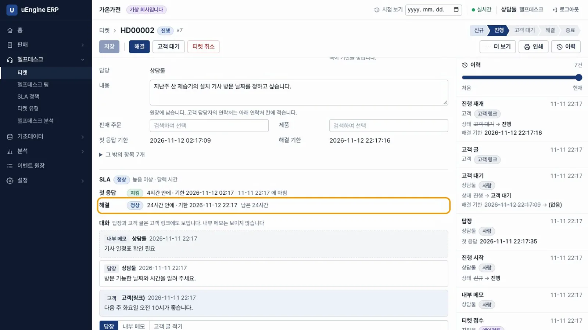
진행 재개 - 위반. 다섯 시간 전 접수한 셋째 문의
HD00003 환불 요청에는 아무도 답하지 않았습니다. 헬프데스크 → 헬프데스크 분석의 열린 티켓 SLA에서HD00003이 「위반」입니다. 매분 실행되는 작업이 위반을 기록하며, 기한 지금 확인으로 바로 확인할 수도 있습니다.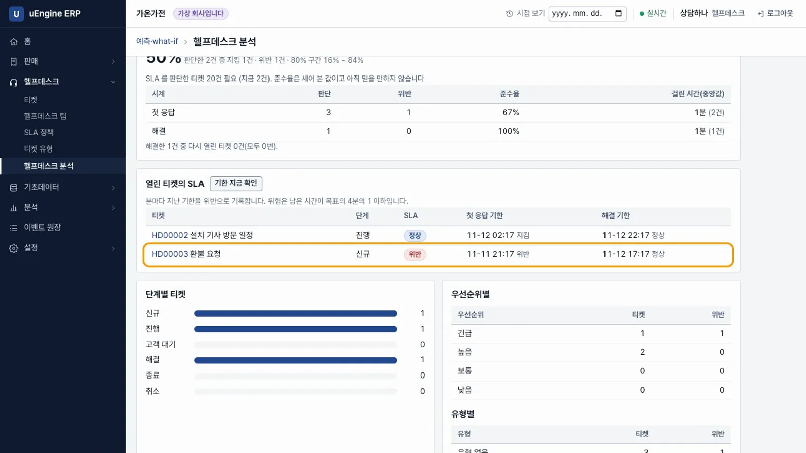
위반 - 이력.
HD00003의 이력에SLA 위반 · 시스템 · SLA 기한이 남습니다. 위반 시각은 첫 응답 기한이며, 다시 확인해도 한 번만 남습니다.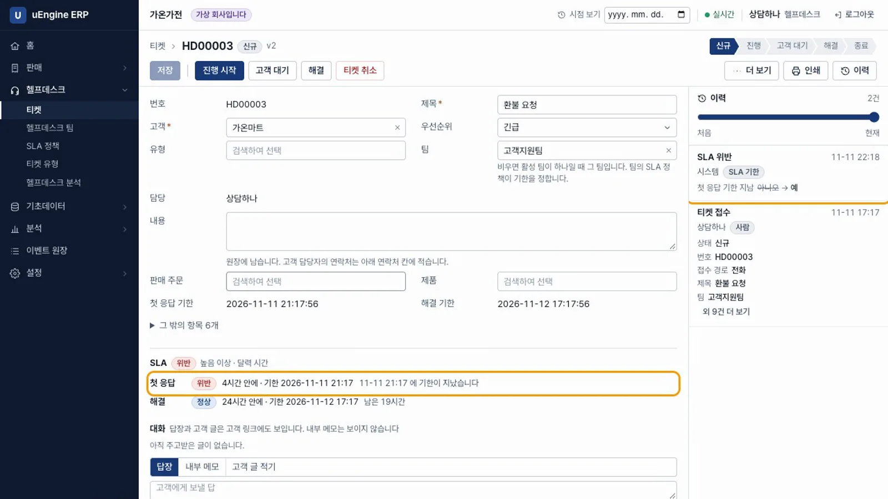
위반 이력 - 준수율. 헬프데스크 분석의 SLA 준수율은 50%입니다. 판단한 2건 중 지킴 1건, 위반 1건입니다. 20건이 되기 전에는 근거가 부족하다고 표시합니다.
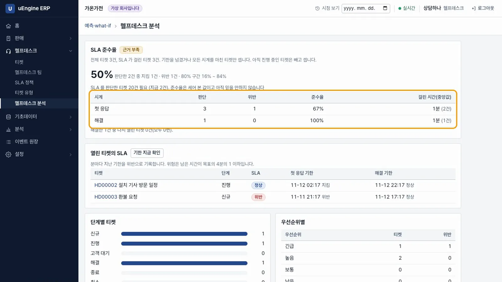
준수율 - 프로세스 마이닝 로그. 분석 → 프로세스 마이닝 로그의 티켓 탭에 사례 3건, 이벤트 13건, 흐름 3가지가 나옵니다.
티켓 접수 → SLA 위반같은 흐름을 내려받아 Process GPT에 올릴 수 있습니다.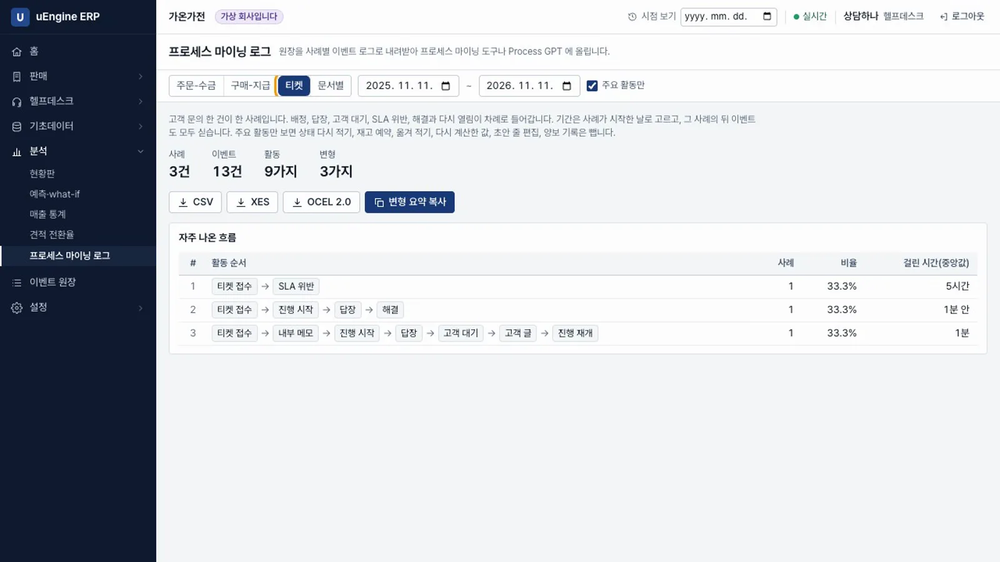
프로세스 마이닝 로그
확인 문제#
고객 대기 중에도 첫 응답 시간을 셉니까?
셉니다. 고객 대기는 해결 시계만 멈춥니다. 첫 응답은 고객에게 처음 답해야 지켜집니다.
위반 확인 작업이 반복되면 기록도 여러 번 남습니까?
남지 않습니다. 시계마다 한 번만 남고, 위반 시각은 확인한 때가 아니라 기한입니다.
고객 링크를 받은 사람은 무엇을 볼 수 있습니까?
해당 티켓의 진행 상황, 담당자 답장, 본인의 글만 봅니다. 내부 메모와 다른 티켓은 볼 수 없습니다.